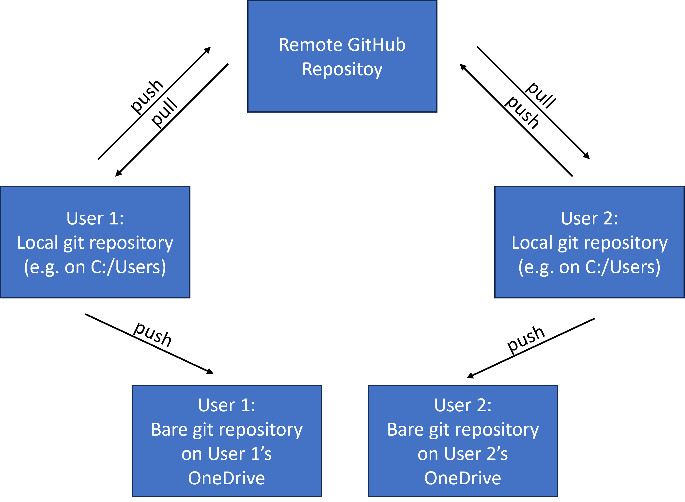

vignettes/github_ondrive_records.Rmd
github_ondrive_records.RmdIf you have a GitHub and local git repository that is not on OneDrive (e.g. git repos and OneDrive are best to not be mixed!), we can set up a mirror on OneDrive that will satisfy records requirements because EPA does not consider GitHub repos as records. Our files on OneDrive are records and are backed up.
If you are working in R in the git repository (aside: An RStudio project would be an excellent way to manage this) you can do the following to set up a mirror repo on OneDrive.
First, make sure you have the epar pacakge installed
from GitHub.
install.packages("pak")
pak::pkg_install("usepa/epar")
library(epar)With that taken care of we can use the add_mirror_repo()
and one_drive_mirror() functions to get everything set
up.
mirror <- one_drive_mirror("projects")
add_mirror_repo(mirror)For details read the rest!
Currently, files stored on EPA’s Enterprise GitHub do not meet the requirements for records, therefore we need to find alternative means to make sure our GitHub based work is captured in a records friendly way. The most widely used solution for saving digital files so that they comply with EPA records requirements is to use EPA’s OneDrive. For most files this is the default for EPA systems and a perfectly fine solution. However, using OneDrive to store local git repositories is a problematic proposition.
The are several potential problems with storing active local git repositories on OneDrive and they arise from OneDrive syncs and possible conflicts between git and OneDrive’s version histories.
First, since OneDrive is monitoring changes to folders and attempting to sync those changes to the cloud, any change to a large number of files has the potential to significantly tax you local computing resources. If you use branches in your local git repository, anytime you switch branches that has the potential to change many file and folders in the repo and thus, OneDrive will try to sync everything to the cloud everytime you change branches.
Second, OneDrive’s built in version history is not git aware and thus if any changes occur to the same files on OneDrive it will rename those files. This is fundamentally different than how git manages versions and these two approaches have the potential to conflict with one another. This raises the possibility of corrupting your git version history.
If you are working on a git repo on OneDrive with only yourself, the chance of this occurring is low; however, if you are working on a shared OneDrive location that is also a git repository, there is a much higher chance of corruption and if you have multiple users on a git repo on OneDrive and use a branching workflow, corruption of that repository is essentially assured.
One solution that will allow users to use git and GitHub while also maintaining records is to maintain your GitHub repository as a shared remote repository, work on a local git repository on a local drive (C: or external drive), and mirror this local repository to their OneDrive on each push. This workflow is capture in Figure 1.
 In order to use this workflow some alterations are needed for local repositories.
To set this all up in R, you may use the
add_mirror_repo() and one_drive_mirror()
functions in the epar package. This function assumes and
test that the repo you would like to mirror is an existing git
repository.
pak::pkg_install("usepa/epar")
library(epar)With the latest version of the epar package installed
from GitHub you can create the path for your mirror and then create it.
In the code below, I am setting up a mirror in a “projects” folder on my
OneDrive the name of the mirror repo defaults to the name of the local
repository.
my_mirror <- one_drive_mirror("projects")
my_mirror## [1] "/home/runner./projects/epar"Then you can set it up with:
add_mirror_repo(my_mirror)And then to just make sure my remotes look correct run this from the terminal:
## origin https://github.com/USEPA/epar (fetch)
## origin https://github.com/USEPA/epar (push)
## origin C:\Users\JHollist\OneDrive - Environmental Protection Agency (EPA)\projects\epar (push)